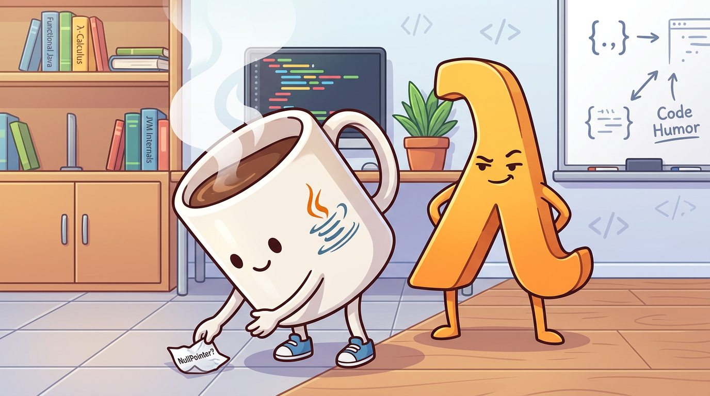

MVI vs MVVM: Experiment Findings
A compact comparison of Haskell and Kotlin implementations testing this question: when MVVM is constrained to a stateless, unidirectional core, does it converge to MVI?

Direct Outcome
Conclusion with scope:
In this repo's minimal examples, MVVM and MVI share the same transition core shape
(event + current state -> next state). Removing the stateful shell
(IORef or mutable ViewModel updates) yields an MVI-style architecture.
- Agree: the hypothesis is valid for these implementations.
- Caveat: this is a scoped finding, not a universal framework-level equivalence claim.
- Caveat: Kotlin MVVM test style here uses coroutines, but that depends on API/testing choices.
Architecture Diagrams
MVVM in this project
MVI in this project
Convergence map: MVVM -> MVI-style core
Compare and Contrast
| Implementation | State handling | Update style | Test shape |
|---|---|---|---|
| Haskell MVI | Immutable Model |
Pure reduce over intents |
Pure logic tests without IO |
| Haskell MVVM | IORef ViewModel shell |
runCommand reads/writes ref |
applyCommand pure; shell in IO |
| Kotlin MVVM | MutableStateFlow<UiState> |
ViewModel methods mutate _state.value |
Repo tests use coroutines + flow reads |
| Kotlin MVI | Immutable State |
Pure reduce(intent, state) |
Reducer tests without ViewModel plumbing |
Historical Perspective: Alan Kay
Alan Kay's oft-quoted regret, that he "did not have C++ in mind" when naming object-oriented programming, is a reminder that OOP originally centered on messaging between autonomous entities rather than rigid class hierarchies and inheritance-heavy type systems. Much of modern OOP practice instead leans on explicitly defined, stateful coupling: objects hold references to other objects, dependency graphs are wired up front, and behavior often depends on mutable identity across those links. Pure functional architecture moves in the opposite direction: components relate through values, pure transformations, and compositional type signatures rather than hardcoded object references. In that model, relationships are implied by domain entities and algebraic contracts themselves, where signatures encode what can exist and how it can be transformed, producing systems that are easier to reason about, test, and evolve.
Project File Tree
Source-focused tree of the project structure (excluding PROJECT_PROMPT.md and Generated_image.png).
- MVI/
- index.html
- README.md
- REPORT.md
- haskell/
- mvi/
- Main.hs
- mvi.cabal
- package.yaml
- stack.yaml
- stack.yaml.lock
- src/
- app/
- test/
- mvvm/
- Main.hs
- mvvm.cabal
- package.yaml
- stack.yaml
- stack.yaml.lock
- src/
- app/
- test/
- mvi/
- kotlin/
- mvi/
- build.gradle.kts
- settings.gradle.kts
- src/main/kotlin/mvi/
- src/test/kotlin/mvi/
- mvvm/
- build.gradle.kts
- settings.gradle.kts
- src/main/kotlin/mvvm/
- src/test/kotlin/mvvm/
- mvi/
No file selected.
Conclusion
The experiment supports the revised claim: in these minimal Haskell and Kotlin implementations, MVVM converges to an MVI-style architecture when state transitions are constrained to a pure, intent-driven, unidirectional model. The strongest evidence is structural: both styles reduce to the same transition core once mutable shells are removed or minimized.
As state types become richer (multiple renderable items, UI toggles, async flags, and validation states), local complexity rises in both approaches because there are more fields and transitions to model. MVI tends to centralize that complexity in explicit intents and reducer cases, while MVVM often distributes it across ViewModel methods and observers.
Advantages and disadvantages by implementation
- Haskell MVI: Advantage: strongest reasoning clarity and testability via pure reducer + immutable model. Disadvantage: intent/reducer branching grows as state space expands.
- Haskell MVVM: Advantage: practical pure-core plus IO-shell split with incremental migration path. Disadvantage: mutable shell can introduce hidden update paths without strict discipline.
- Kotlin MVVM: Advantage: ergonomic UI integration and familiar StateFlow-based workflow. Disadvantage: update logic can fragment across methods/observers as features grow.
- Kotlin MVI: Advantage: centralized transitions improve predictability, debugging, and reducer-focused tests. Disadvantage: more boilerplate and larger reducer surfaces for richer domains.
This should be read as a scoped engineering result for this project, not as a blanket statement that all MVVM systems are equivalent to all MVI systems.
References
- PROJECT_PROMPT.md - experiment objective, architecture definitions, and success criteria.
- REPORT.md - revised analysis and scoped findings.
- haskell/mvi/src/App.hs and haskell/mvvm/src/App.hs - Haskell reference implementations.
- kotlin/mvi/src/main/kotlin/mvi/App.kt and kotlin/mvvm/src/main/kotlin/mvvm/ViewModel.kt - Kotlin reference implementations.